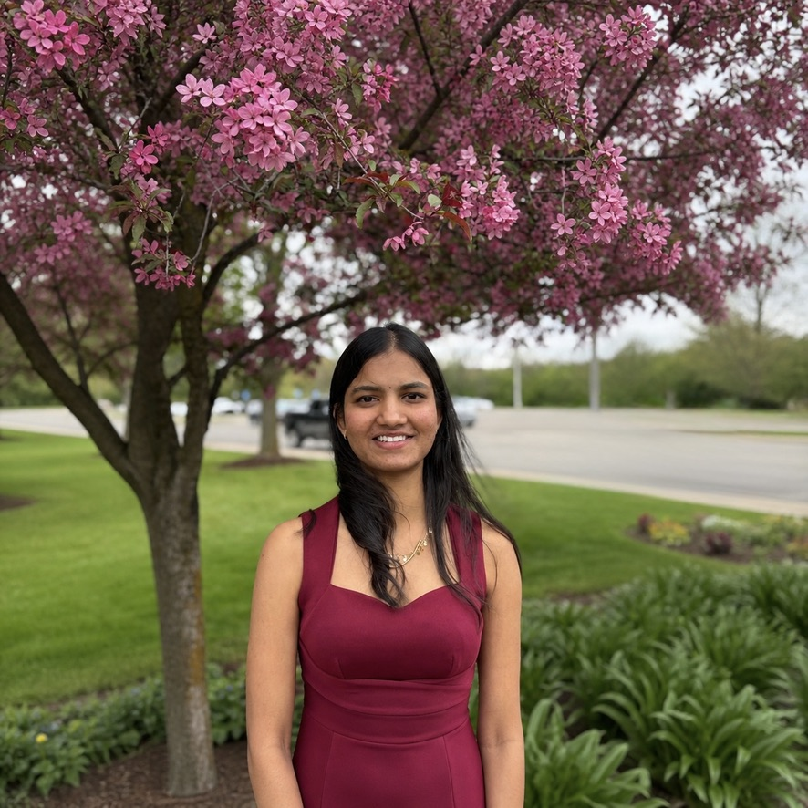

AI / ML Engineer
Master's candidate in Artificial Intelligence at University of Michigan, Dearborn (GPA 3.71). Building AI agents with MCP integrations and production inference pipelines at Leap Innovations, while researching AV safety systems at UMTRI. Shipping AI that works in the real world.

I'm a Master's student in Artificial Intelligence at University of Michigan, Dearborn (GPA 3.71), with a clear thesis: AI is only as good as its impact on real people in real conditions.
Currently I'm building a production AI inference agent at Leap Innovations using Python, MCP integrations, and modular pre/post-processing pipelines with full CI/CD on Linux. Simultaneously, I'm a Research Assistant at UMTRI working across three AV safety studies: designing DOT/SAE-compliant blind spot warning interfaces, conducting a Cruden simulator study with 40 participants on how seniors with cognitive challenges respond to AV systems, and completing crash causation analysis using DREAM statistical methods on NHTSA datasets.
Previously I built Unity-based generative AI simulations producing 50+ procedurally generated environments for autonomous agent behavioral testing. At Mroads, I shipped three systems to production, including a facial recognition system with 95%+ accuracy and a full LLM + RAG + vector database recruitment platform that consolidated six fragmented tools into one.
Seeking full-time AI/ML and autonomous systems roles where I can own problems end-to-end, from data pipeline to deployed model. Based in Michigan, USA.
From production inference pipelines and AI agents to autonomous vehicle safety research. Every role has been about making AI useful.
Ten projects spanning autonomous systems, AI agents, reinforcement learning, computer vision, financial modeling, and healthcare AI.
A closed-loop RL system that designs drug-like small molecules by learning which chemical fragments to combine, mirroring real DMTA discovery cycles. A PPO agent iteratively appends fragments; reward combines QED and penalized logP with Gaussian noise to simulate assay variability. Mean QED improved from ~0.18 (random baseline) to ~0.42 over 100k timesteps. Drug-likeness rate (QED > 0.5): ~28%. Lipinski compliance: ~74%. Internal Tanimoto diversity: ~0.61.
Production Python AI inference agent integrating GitHub MCP Server for automated diff-aware PR analysis and structured risk scoring across multi-repo environments. Full pre/post-processing pipeline with secret-redaction guardrails, webhook automation, and unit-tested backend on Linux CI/CD.
Unity-based warehouse simulation with autonomous robot navigation using A* path-planning, simplified kinematic modeling, and raycast-based obstacle detection. ROS integration on Linux for sensor data processing. Reduced workflow variability 18% via cycle-time optimization experiments.
End-to-end real-time ADAS lane detection using OpenCV and TensorFlow. 90%+ accuracy across varied lighting, weather, and faded markings. Custom pre/post-processing modules: raw camera frame → normalized input → structured ADAS signal. Per-frame latency cut 35% (150ms → 98ms).
Built Unity simulations using C# and generative AI algorithms for procedural level generation, producing 50+ randomized tutorial environments for students across playthroughs. Designed performance benchmarking frameworks and applied systematic parameter tuning to optimize generative model quality and inference speed.
Deep learning facial recognition system processing large-scale image datasets with 95%+ classification accuracy in a real-time production environment. Eliminated manual check-in for 500+ employees, cutting HR overhead ~40%. Full inference infrastructure: preprocessing → model serving → post-processing.
Full virtual recruitment platform integrating LLMs, RAG with vector databases, and AI agents. Consolidated 6 fragmented tools into one workflow, reducing recruiter administrative overhead ~50%. LLM-powered resume optimizer with keyword tuning improving ATS match scores across pilot job categories.
Hybrid ARIMA + LSTM model achieving RMSE 3.72 and MAPE 6.5%. Improved forecast accuracy 20% over baselines through advanced feature engineering and multi-horizon prediction strategies.
Symptom-driven recommendation engine benchmarking Random Forest, SVM, and KNN on 22,500 records. Production-quality evaluation pipeline with cross-validation and precision/recall reporting to identify optimal classifier for deployment.
Human subjects study with 40 participants examining how senior citizens with cognitive challenges respond to autonomous vehicle features: AV mode, automatic emergency braking, and crash scenarios. Collecting and analyzing behavioral response data using a Cruden driving simulator to assess safety implications for aging populations.
Actively looking for full-time AI/ML engineering roles: production systems, perception pipelines, and research-adjacent positions. Based in Michigan, USA. Open to hybrid and remote.
Send a Message